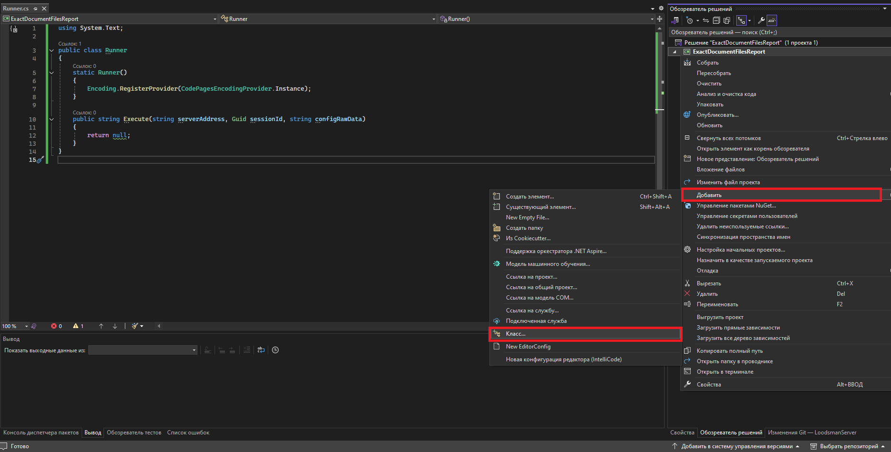
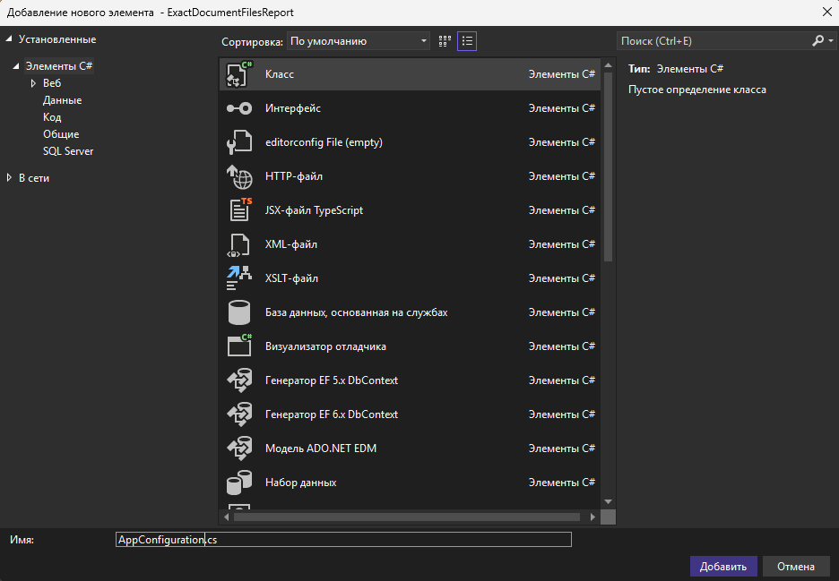
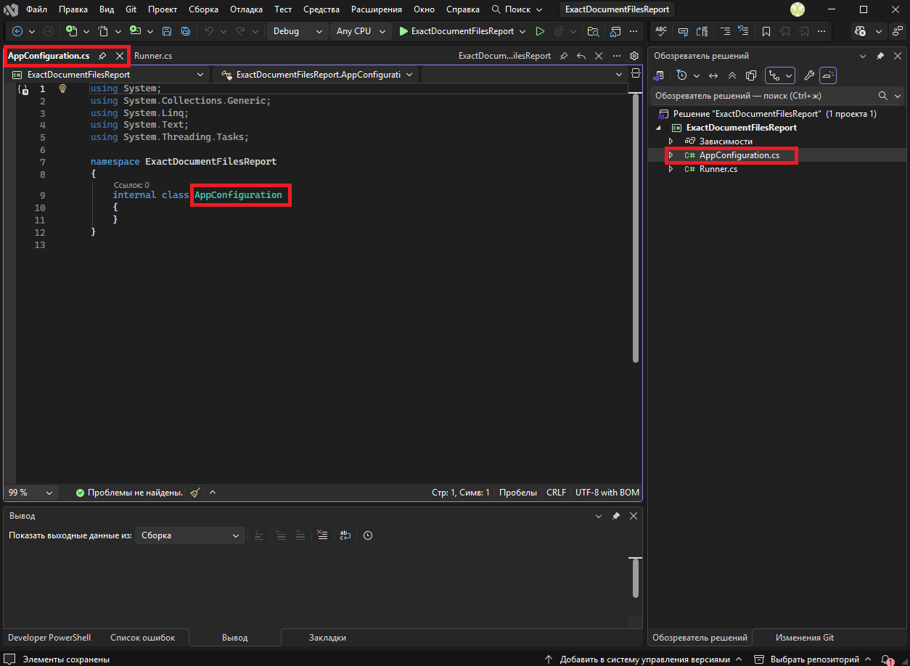
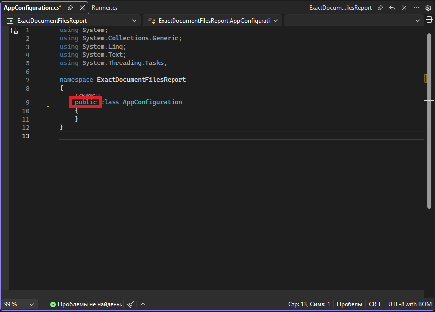
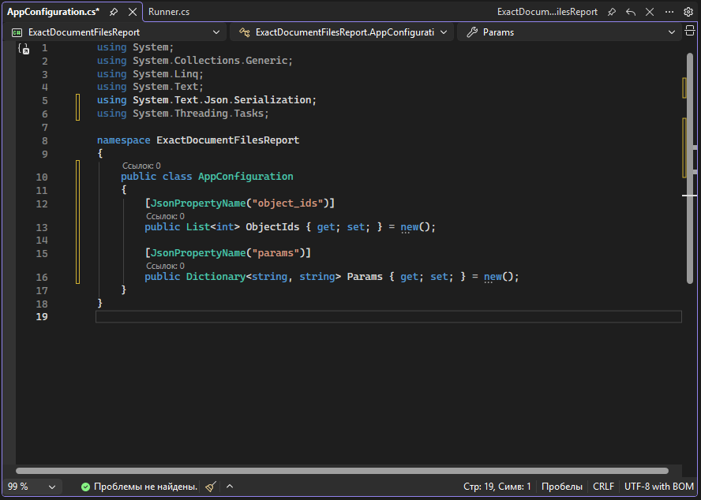
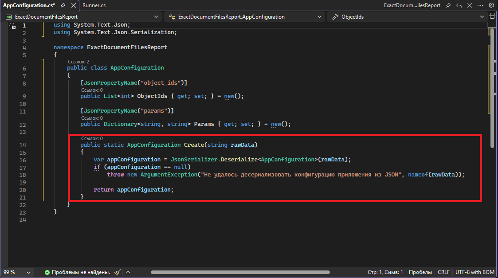

Извлечение данных из параметров скрипта
Для упрощения работы с входными аргументами и пользовательскими данными создадим универсальный класс, который можно будет использовать в других проектах, для этого нужно нажать ПКМ на названии проекта (НЕ «решения») и выбрать соответствующий пункт меню "Добавить/Класс"

В открывшемся окне выберем элемент «Класс», если он не выбран автоматически и вводим имя, отражающее его функционал:

В проект добавится пустой класс с выбранным именем:

В рамках библиотеки классов всем сущностям кода можно назначить модификатор доступа «public»
(https://learn.microsoft.com/ru-ru/dotnet/csharp/language-reference/keywords/access-modifiers)

Так как, в данном случае, ожидаемый входной JSON имеет вид:
{
"object_ids": [2904, 2, 3],
"params": {
"Глубина разузловки": "3",
"Название типа связи для отбора объектов": "Состоит из ...",
"Название типа связи для отбора документов": "Документы"
}
}
то фактически в модели данных необходимо добавить 2 поля - массив идентификаторов объектов и словарь параметров:

[JsonPropertyName("object_ids")]
public List<int> ObjectIds { get; set; } = new();
[JsonPropertyName("params")]
public Dictionary<string, string> Params { get; set; } = new();
Здесь мы использовали атрибуты для явного сопоставления конкретных полей кода с полями в JSON (https://learn.microsoft.com/ru-ru/dotnet/standard/serialization/system-text-json/customize-properties).
Такой приём нужно использовать только в том случае, если имена переменных в коде не совпадают с именами в JSON.
Теперь нужно создать метод инициализации модели данных, который будет принимать строку пользовательских данных и записывать их в созданную модель:

public static AppConfiguration Create(string rawData)
{
var appConfiguration = JsonSerializer.Deserialize<AppConfiguration>(rawData);
if (appConfiguration == null)
throw new ArgumentException("Не удалось десериализовать конфигурацию приложения из JSON", nameof(rawData));
return appConfiguration;
}
Конфигурация отчёта (configRawData), в данном случае, состоит из 4 значений:
- Массив идентификаторов объекта
- Параметр отчёта "Глубина разузловки"
- Параметр отчёта "Название типа связи для отбора объектов"
- Параметр отчёта "Название типа связи для отбора документов"
Добавим методы для получения каждого из этих значений.
Финальный код класса конфигурации:
using System;
using System.Collections.Generic;
using System.Linq;
using System.Text;
using System.Text.Json;
using System.Text.Json.Serialization;
using System.Threading.Tasks;
namespace ExactDocumentFilesReport
{
public class AppConfiguration
{
[JsonPropertyName("object_ids")]
public List<int> ObjectIds { get; set; } = new();
[JsonPropertyName("params")]
public Dictionary<string, string> Params { get; set; } = new();
public static AppConfiguration Create(string rawData)
{
var appConfiguration = JsonSerializer.Deserialize<AppConfiguration>(rawData);
if (appConfiguration == null)
throw new ArgumentException("Не удалось десериализовать конфигурацию приложения из JSON", nameof(rawData));
return appConfiguration;
}
public int GetMainObjectId() // Получить идентификатор базового объекта.
{
if (ObjectIds == null || ObjectIds.Count == 0)
throw new InvalidOperationException("Не удалось получить идентификатор базового объекта");
return ObjectIds[0];
}
public int GetMaxDepth() // Получить глубину разузловки
{
foreach (var parameter in Params)
{
if (parameter.Key == "Глубина разузловки")
{
string? parameterValue = parameter.Value?.ToString();
if (int.TryParse(parameterValue, out int depth))
{
return depth;
}
}
}
throw new InvalidOperationException("Не удалось получить значение параметра \"Глубина разузловки\"");
}
public string GetSelectingObjectsLinkTypeName() // Получить название типа связи для отбора объектов
{
foreach (var parameter in Params)
{
if (parameter.Key == "Название типа связи для отбора объектов")
{
string? parameterValue = parameter.Value?.ToString();
if (!string.IsNullOrWhiteSpace(parameterValue))
{
return parameterValue;
}
}
}
throw new InvalidOperationException("Не удалось получить значение параметра \"Название типа связи для отбора объектов\"");
}
public string GetSelectingDocumentsLinkTypeName() // Получить название типа связи для отбора документов
{
foreach (var parameter in Params)
{
if (parameter.Key == "Название типа связи для отбора документов")
{
string? parameterValue = parameter.Value?.ToString();
if (!string.IsNullOrWhiteSpace(parameterValue))
{
return parameterValue;
}
}
}
throw new InvalidOperationException("Не удалось получить значение параметра \"Название типа связи для отбора документов\"");
}
}
}